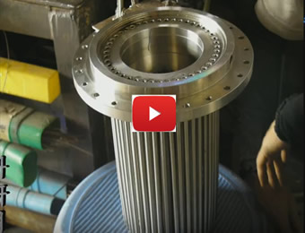
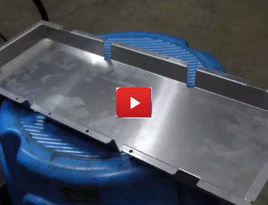

首頁
公司簡介
服務項目
現場搶修
模具修補
輥輪修補
雷射焊補
冷補堆焊
刷鍍維修
特殊焊接技術
藝品及客製化
冷焊修補
設備銷售
雷射焊補機
精巧型雷射焊補機
加長型雷射焊補機
三目搖桿操控雷焊機
XYZ搖桿操控雷焊機
高性能珠寶雷焊機
移動式現場雷射焊補機
手持式雷射焊補機
大型模具雷射焊補機
基本型雷射焊補機
雷射打標機
非金屬雷射切割機
瞬間放電冷焊機
冷補堆焊機
金屬刷鍍維修設備
弧形精密量測器具
鎢棒磨尖機
震動式堆焊機
微型旋轉工作台
移動式除煙塵設備
三維移動式工作台
XYZ搖桿操控平台
實例影片
聯絡我們
冷焊修補
鋅合金熔鑄大模仁 冷焊修補
風車葉輪軸心 冷焊修補
切料模頭(加工差超)冷焊補
灰口鑄鐵損傷 冷焊修補
精密脫臘鑄件內孔冷焊修補160524
鋁圈大面積損傷 冷焊修補
鋁質過濾薄管含法蘭面焊接
316L鑄件及管材焊接
大型模具損傷 卡車上冷焊修補

真空加熱筒 科研用
大型輥輪key位 冷焊修補
鋁質輪圈模型 加工超差修補
沙灘車引擎外殼溝補強
賓士汽車 鋁合金鈑金裂縫冷焊修補
陶瓷噴銲瑕疵底材重新冷焊
油壓缸內刮傷嚴重以冷焊修補150912
鋁合金鑄件之薄孔洞外緣龜裂,以冷焊完善修補
減速機鑄鐵機殼裂縫冷焊修補
模具冷焊修補
鑄鐵鑄鋁輪盤裂縫冷焊修補
大型鑄件機架焊補缺失150718
冷焊-攪拌軸軸承磨損
冷焊-氮化處理螺桿
冷焊-直角損傷修補示範
冷焊-薄鐵片焊接示範
冷焊-鋁材焊補示範
冷焊-鍍鉻金屬焊補示範
氮化處理裂紋螺杆冷焊140815
鋁質滾筒硬鉻電鍍前砂孔焊補
冷焊刀模鈷基合金12 141009
葉輪冷焊補升溫測試及記錄140925
瓦楞輥碳化鎢噴銲冷焊修補140823
鍍鉻輥鉻層修補測試140816
模具邊角冷焊修補
雷射焊補
伸縮囊Bellow法蘭面焊補科技廠真空腔體內部核心零件
高爾夫球頭密閉式雷焊機修補
金屬錶帶隼扣雷射焊接
雷射焊補-工程塑膠修補實例
微型模具雷射焊補
白鐵工件雷射焊接
刀具類雷射焊接091218
精密滾筒包覆電鑄鎳板之雷射焊接
雙合金料管雷射焊補091123
特殊氣體鋼瓶洩漏 雷射焊補
刷鍍修補
刷鍍設備金屬再生應用實例
真空腔體局部刷鍍
中型汽壓缸內部刮傷 刷鍍修補
氬焊修補
大型銅輥軸承座焊補
大型銅模焊補140816
鑄鐵銑床平台內溝底部砂孔缺陷 低入熱量式焊補
鋁青銅半自動化焊補091030
煉鋼廠精鑄銅模內壁損傷 以低溫氬焊修補
現場修補&其他

鋁盤焊接實例
印刷滾輪刷鍍細砂紙研磨
鑄鐵孔洞堆焊修補
模型製作-太魯閣風月吊橋
天車鑄鋁外殼龜裂修補
三菱五色印刷機橡皮滾筒壓傷現場修補
大型鑄鐵車壁砂孔現場修補150718
海德堡五色加上光印刷機 現場修補
重型機車鋁質進口排氣管損傷 冷焊及氬焊修補
某大廠機座損傷 刷鍍修補
烘缸表面硬鉻電鍍砂孔低入熱量式現場焊補及手工研磨
白鑄鐵冷激硬面白鑄鐵壓光轆表面砂孔之低入熱量式焊補。
大型鋁板加工超差修補